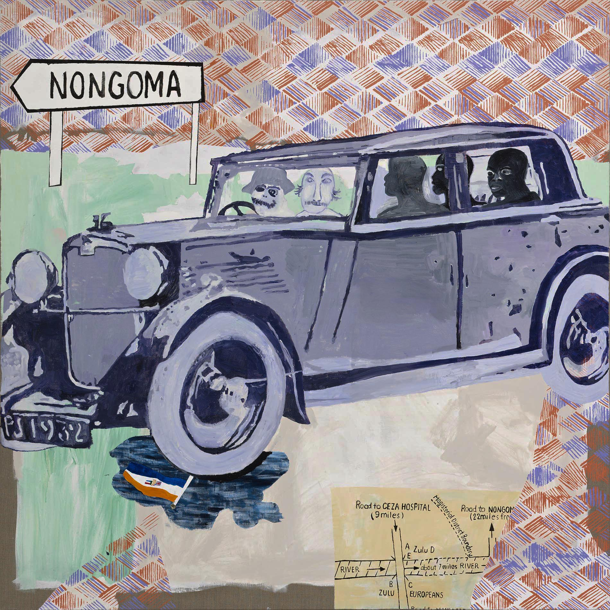

Landmarks in conceptualizing the ethnographic field by Malinowski and Gluckman
The two ethnographic works we’re reading this week are Bronislaw Malinowski’s Argonauts of the Western Pacific (1922) and Max Gluckman’s article “Analysis of a Social Situation in Modern Zululand” (widely known as “The Bridge,” 1940). The two works make foundational methodological claims for how to do ethnography, but their foci are sharply different. Malinowski’s Argonauts would become a canonical text for fieldwork through participant observation, while Gluckman’s article is a landmark in the development of power-aware situational analysis.
Malinowski’s Argonauts of the Western Pacific

Bronisław Malinowski (), a native of Krakow, received his doctorate there, only turning his attention to anthropology at that time, inspired by James Frazer’s The Golden Bough. He worked at the London School of Ecoonomics from 1910 and late in his life at Yale University.
It’s difficult to underestimate either the influence of Malinowski on the traditions of anthropological fieldwork or the broad impact of his students on mid-century social anthropology, which parallels that of Boas’ students in the United States. Among his students were E. E. Evans-Pritchard, Raymond Firth, Meyer Fortes, and Edmund Leach, each noted for their contributions to mid-century anthropological theory. Jomo Kenyatta studied social anthropology with Malinowski and crafted his essays on his Kikuyu people into the book Facing Mount Kenya (1938),1 which also stands as an indictment of British colonial misunderstandings of Kenyan society. Kenyatta returned to his native land in 1947, led the Kenyan African Union, and became the first president of Kenya until his death in 1978.
1 Jomo Kenyatta, Facing Mount Kenya: the tribal life of the Gikuyu (Secker; Warburg, 1953), https://archive.org/details/facingmountkenya0000jomo_k4y6/page/n9/mode/2up.
2 Vine. Deloria, Custer Died for Your Sins: An Indian Manifesto (Macmillan Company, 1969), 78–100.
It’s remarkable how Malinowski’s argument for theoretically informed fieldwork in Argonauts is mirrored by Vine Deloria’s polemic2 against anthropologists in Native American communities who are concerned with theoretical questions rather than the practical problems of their research subjects.
In Argonauts, Malinowski also outlines a three-part vision for anthropological writing and data collection: (1) systematic data on a tribe’s organization and cultural forms; (2) elegant writing on “the imponderabilia of actual life” and behavior as recorded in ethnographic diaries; and (3) a corpus of native-language statements, myths, magical formula, and narratives. These lines of evidence converge in Malinowski’s widely cited statement of purpose for ethnography:
These three lines of approach lead to the final goal, of which an Ethnographer should never lose sight. This goal is, briefly, to grasp the native’s point of view, his relation to life, to realise his vision of his world. We have to study man, and we must study what concerns him most intimately, that is, the hold which life has on him. In each culture, the values are slightly different; people aspire after substance of their happiness—is, in my opinion, to miss the greatest reward different aims, follow different impulses, yearn after a different form of happiness. In each culture, we find different institutions in which man pursues his life-interest, different customs by which he satisfies his aspirations, different codes of law and morality which reward his virtues or punish his defections. To study the institutions, customs, and codes or to study the behaviour and mentality without the subjective desire of feeling by what these people live, of realising the which we can hope to obtain from the study of man.
Gluckman’s “Analysis of a Social Situation in Modern Zululand”

Max Gluckman () was born in Johannesburg, South Africa in 1911. Gluckman studied anthropology at the University of the Witwatersrand in Johannesburg under Winifred Hoernlé and I. Schapera. He would later describe this training as part of the “sociological stream” of anthropology, which he traced upstream to those scholar’s teacher, Alfred “A.R.” Radcliffe-Brown, and through him to Emile Durkheim.3 His doctoral work in anthropology at Oxford brought him into direct contact with Radcliffe-Brown as well as E. E. Evans-Pritchard and solidified his attachment to social anthropology as his intellectual home.
3 Max Gluckman, Order and Rebellion in Tribal Societies (Cohen & West, 1963), 2.
4 Gluckman Max, The Kingdom of the Zulu of South Africa, 1st ed. (Routledge, 1987), 25–55, https://doi.org/10.4324/9781315683461-2.
Gluckman traces his own intellectual biography in detail in an introductory essay to Order and Rebellion in Tribal Africa. After completing his doctorate, Gluckman returned to South Africa to conduct fieldwork among the Zulu people of Natal. His article written in the field, “The Kingdom of the Zulu in South Africa” considers 120 years of Zulu history from the nation’s founding by Shaka Zulu in 1818-24. The focus is within the Zulu Nation, but is on turbulent processes of political change through rebellions that nonetheless maintain the nation and its monarchy. Gluckman considers the Zulu people’s relationships to the British colonial power as part of this history.4
However, his article “Analysis of a Social Situation in Modern Zululand” (1940),5 commonly referred to as “The Bridge,” casts the largest shadow on broader anthropology, precisely because it re-conceptualizes the colonial society in South Africa as a single biracial society and because it introduced an approach to situational analysis that tacks betweeen specific events and the broader social structure. In effect, Gluckman imports the concept of segmentary society, previously applied to complex African polities to the colonial situation of racially stratified power in South Africa.
5 Max Gluckman, Analysis of a Social Situation in Modern Zululand (Published on behalf of the Rhodes-Livingstone Institute by the Manchester University Press, 1958).
Gluckman’s approach shifts the framing of anthropology from “the Native” society to the social world that includes the anthropologist him or herself, the colonial government, missionaries, employers, and the entire complex power structure. At root is consideration of what we now call “his own subject position” and a kind of narration later termed “reflexivity.”

Obviously many difficulties beset an anthropologist in this situation, especially if he comes to study race-relationships themselves. He cannot walk around asking about these and his presence always disturbs the people. I did not drop as an isolated individual into Zulu life, recording with superior impartiality what I observed. I came as a White – and the Zulu had to fit me in as an eccentric and highly suspect member of the dominant White group. As a White, I was a “chief” and that created about me latent political power. I early became conscious of attempts by the Zulu to use me for their own advantage and to play me against both Black and White personalities. … My later data on general White-Zulu relationships shows that what happened to me was not the unique result of my character and views, though it was affected by these, but crystallized the form of Zululand social structure itself. — Max Gluckman, “Conflict and Cohesion in Zululand: An Historical Study in Social Organization,” unpublished manuscript written c. 1946.6
6 Robert J. Gordon and H. Max Gluckman, “On Burning One’s Bridge: The Context of Gluckman’s Zulu Fieldwork: With the Previously Unpublished Chapter “the Research Situation” (Circa 1946),” History in Africa 41 (2014): 183, https://www.jstor.org/stable/26362088.
Some amazing context for Max Gluckman’s “The Bridge” article is offered in Robert Gordon’s “On Burning One’s Bridge: The Context of Gluckman’s Zulu Fieldwork,”7 to which is appended Gluckman’s unpublished note that is quoted above. Here is its suggestive abstract:
7 Gordon and Gluckman, “On Burning One’s Bridge.”
Abstract: Gluckman’s 1940 essay “An Analysis of a Social Situation in Modern Zululand” (aka as “The Bridge”) is widely acknowledged as one of the most influ- ential in social anthropology for signalling a paradigm shift. This paper publishes a chapter of a previously unpublished, undated manuscript by Gluckman – probably from 1946 – describing how he did fieldwork in Zululand. A contextualizing essay discusses why Gluckman went to Zululand, what his preparations were, how he famously got “banned,” the role of the regent and the native commissioners in orchestrating this, and how local anti-semitism also played its part. It also suggests that his “banning,” coupled to his marriage in 1939 to Mary Brignoli, a member of the communist party, were crucial factors leading to this paradigm change. Finally, the afterlife of “The Bridge” is sketched showing how dismal was its original reception among peers and colleagues.
Permalink: https://carwilb.github.io/teaching/history-anthro-w10.html